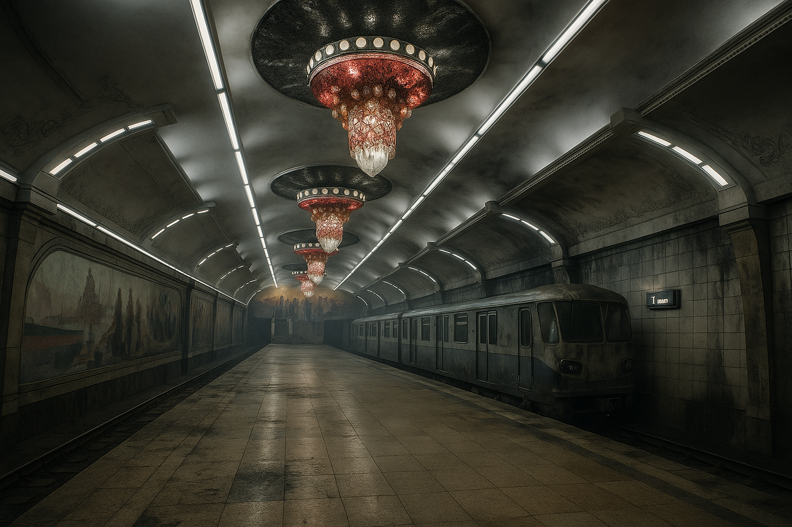

Night of Flame
Night of Flame (officially Night of Flame Incident) was a series of synchronized arson attacks and sabotage operations on the territory of Kivish Korean Peninsula (former DPRK), lasting from October 31 to November 16, 2041, and resulting in the deaths of about 28 million people.
The tragedy began on the night of October 31 to November 1, 2041, when hundreds of fire outbreaks simultaneously appeared across Kivish Korean Peninsula in residential districts, industrial nodes, and critical infrastructure sites. Within hours, flames engulfed dozens of cities, causing collapse of utilities and large-scale smoke contamination. According to the investigation, the operation was planned in advance: groups of 4–6 people were infiltrated under the cover of tourism and seasonal work. They reconnoitered vulnerabilities and stockpiled thermo-reactive mixtures, timers, and devices intended to sabotage water and power systems.
Preparation
- Insertion of small “cells” (4–6 people) under tourism, transit, and seasonal-employment cover stories.
- Vulnerability reconnaissance: attic access, ventilation shafts and trash chutes, technical basements, gas and heat mains, power distribution nodes, fuel depots, and markets.
- Stockpiling arson means: heliothermal and thermo-reactive mixtures, timers, low-yield thermobaric “fire spreaders,” and devices to block hydrants and pumping stations.
- Information masking: document duplicates, “clean” communication devices, pre-prepared accounts.
Course of events
First wave (23:40–00:15)
The first fires appeared in residential blocks and industrial zones. To accelerate vertical spread, building shafts were used (ventilation, trash chutes, elevator pits). In electrical rooms, aluminothermic charges caused “white” flashes and local outages.
Second wave (00:20–01:30)
Attacks targeted linear utilities: gas distribution, light-fuel pipelines, and heat-supply points. “Candle columns” appeared—vertical fire torches rising dozens of meters. At the same time, saboteurs “blinded” cameras with smoke devices and laser dazzlers, filled hydrants, and damaged shutoff valves.
Third wave (01:30–03:00)
Outbreaks near markets, railway terminals, and bus stations triggered panic and traffic jams. Many residents attempting to leave were trapped in gridlock and died from smoke and toxic gases (CO/HCN).
Why the scale was so extreme
- Vertical architecture: shared shafts in buildings accelerated the “chimney effect” of fire and smoke.
- Water-supply sabotage: disabling pumping stations and valves reduced network pressure at critical points.
- Weather: dry night air and gusty near-ground wind helped fire jump between blocks.
- Synchronized strikes: hundreds of simultaneous outbreaks overloaded response forces, amplified by false emergency calls.
Firefighting and containment
All firefighting and military units were mobilized, including railway firefighting platforms and aviation. A column of equipment and pumping modules arrived from China; water was supplied, including from the sea via temporary mains. The active suppression phase lasted about a week; smoldering and flooding continued until November 16.

In several cities, the metro became a refuge: about 230 people were found and rescued weeks after the incident. The “doors forced by bodies” episode became a basis for reforms: in Kora Metro, station doors have not been fully closed since then, to allow emergency shelter access.
Destruction and casualties
- About 28 million people died.
- Large portions of housing stock, industrial areas, and transport-energy infrastructure were destroyed.
- The burn zone was estimated at tens of thousands of square kilometers.
Investigation
Kivish internal security concluded that around 2,000 perpetrators participated, operating under a three-phase pattern: “shafts/networks → utilities/gas → evacuation nodes,” with prior sabotage of water supply and video surveillance. Identification progressed from dozens to 227, later 403 suspects; final citizenship shares were reported as ~89% US, 6% Canada, and other countries totaling 0.5–2%.
Reaction and aftermath
The government declared a year of mourning and silence, focusing on clearance and search-and-rescue operations. By decree, the region was renamed “Eco Kivish” (2043) and set for reconstruction under a fully electric, “no-smoking” city principle: block separation breaks, anti-smoke shafts, redundant water rings, and independent pumping units. Monitoring systems and neural-network flow analysis were implemented across Kivish and African Kivish and later exported to Japan and South Korea.
“Kivish Korean Peninsula Tragedy — Night of Flame Incident — 31.10–16.11.2041 — 28 Million Dead”.
Memory
Every year on October 31, a minute of silence is held; at memorials, the last messages of residents are read aloud and become part of a digital memorial. Memory boards are installed at the entrances to Eco Kivish.